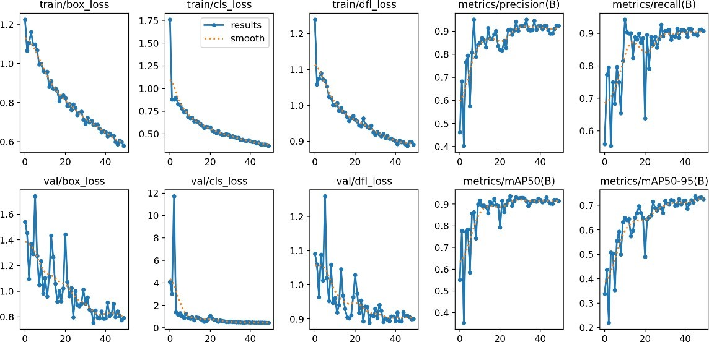
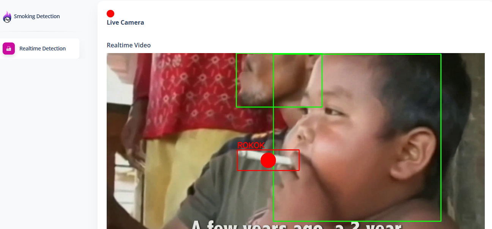

Deteksi Merokok (Realtime)
Pendeteksi Merokok Di Ruangan Terbuka Berbasis Web dan Mobile
Sistem pendeteksi merokok ini menggunakan You Only Look Once versi 8 (YOLOv8) yang nantinya akan digabung dengan CUDA sebagai hardware untuk deteksi yang bisa menghasilkan FPS (Frame Per Second) tinggi, sistem ini dapat mengimplementasikan deteksi orang merokok di tempat yang dilarang merokok dengan mengadaptasi model tersebut dan melatihnya menggunakan dataset yang relevan.
Hasil Model
Hasil dari model ini menggunakan F1-Confidence Curve memiliki kombinasi untuk nilai “rokok”, dengan F1-Score nya 0,6 dan tingkat kepercayaan 0,9, ini berarti meskipun sistem sangat yakin dengan klasifikasinya (90% kepercayaan), hanya 60% dari contoh yang diklasifikasikan adalah benar. Sedangkan untuk “orang” dengan f1-score 0.7 dan tingakat kepercayaan 1.0. untuk semua kelas memiliki nilai presisi 0.6 dan tingakat kepercayaan 100%.
Hasil dari menggunakan model deteksi objek dengan MAP precision 0,95 dan loss 0,5 menunjukkan performa yang sangat baik. MAP precision mengukur tingkat keakuratan prediksi model, dan nilai 0,95 menunjukkan bahwa sebagian besar prediksi yang dibuat oleh model benar dan relevan. Sedangkan loss merupakan ukuran perbedaan antara prediksi model dan kebenaran sebenarnya saat melatih model, dan nilai 0,5 menunjukkan tingkat kesalahan yang rendah. Dengan kombinasi ini, model memiliki tingkat presisi yang tinggi dan tingkat kesalahan yang minimal. Ini menandakan bahwa model mampu menghasilkan prediksi yang akurat dan relevan dalam tugas deteksi objek, memberikan hasil yang dapat diandalkan dalam membedakan objek dengan tingkat kesalahan yang rendah.
 Gambar Nilai MAP
Flask
Projek Merokok ini menggunakan Flask sebagai deploy dan juga rest api untuk mobile nantinya. Pada halaman Flask terdapat deteksi yang mendeteksi rokok dan orang, dimana jika bounding box rokok dan bounding box wajah orang bertemu maka akan masuk ke database yang nantinya kita visualisasikan pada Streamlit.

Mobile
Pada aplikasi mobile dibuat dengan Flutter yang memiliki Halaman Login, Register, OTP, Dashboard Pengguna, Deteksi, dan Visualisasi.